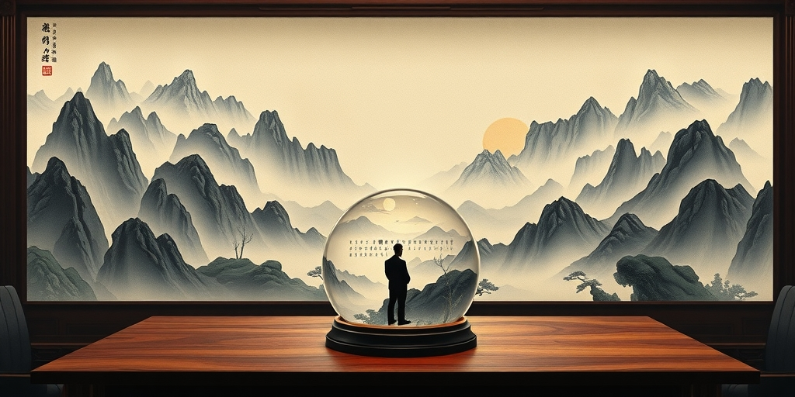
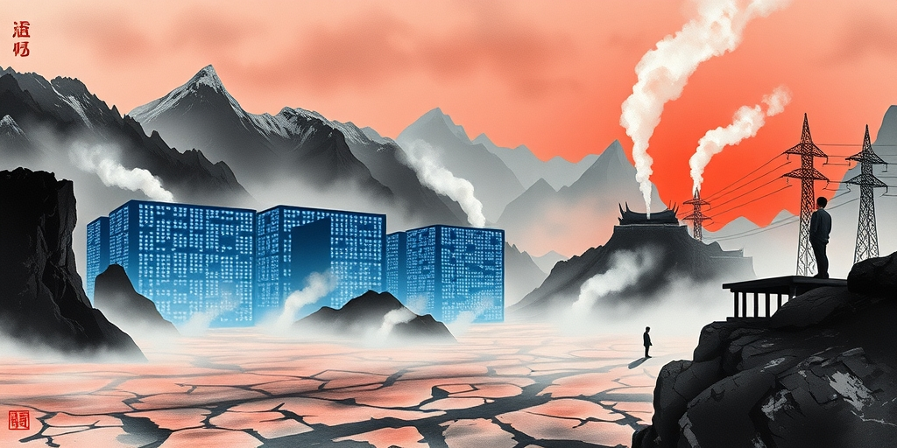
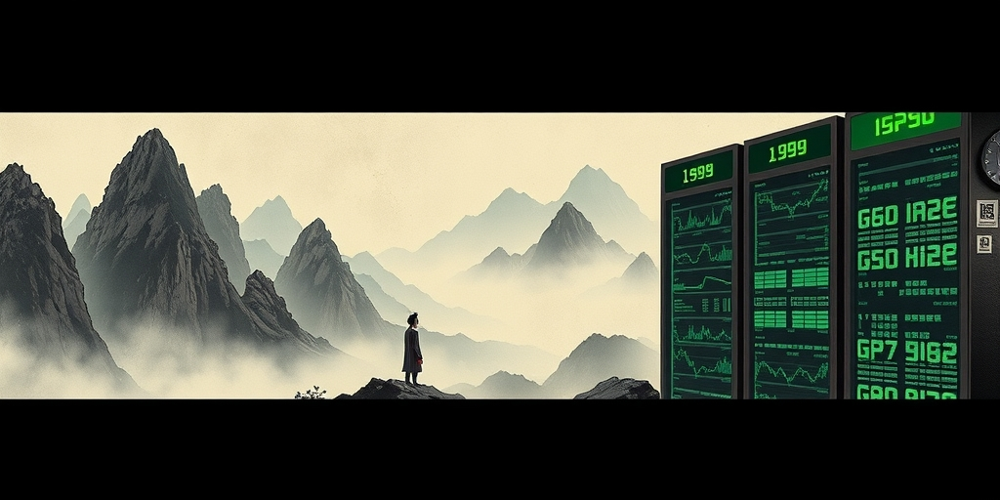

小汪老师的成长洞察 · 属于你的成长专栏
全球3000万程序员，年薪总和的天花板是1.5万亿美元。而几大科技巨头一年砸在AI硬件上的资本开支，已经逼近万亿。这道算术题的答案很清楚：就算AI取代所有程序员，一分钱工资都不付，也撑不起今天的估值逻辑。而历史告诉我们，当一道数学题算不过来的时候，市场不会优雅地修正——它会直接按下暂停键。
全球大约有2600万到3000万名程序员。加权平均年薪按5万美元算，这个群体的年收入总和在1.3万亿到1.5万亿美元之间。假设AI百分之百取代所有程序员，企业一分钱工资都不用付了，这个市场的绝对天花板就是1.5万亿。
而现实是什么？微软、谷歌、亚马逊、Meta这几家巨头，每年砸在AI数据中心、GPU集群、光网络设备上的资本开支，合计已经达到数千亿美元量级。仅头部几家就逼近万亿美元。1.5万亿的收入天花板，撑不起万亿级的资本开支。这不是观点，是算术。
现实比天花板模型更骨感。AI目前不是取代人类，是当副驾驶。GitHub Copilot最贵的企业版，每月每个用户收费40美元。全球3000万程序员全部订阅，一年收入不过144亿美元。就算把全球10亿白领都算上，每人每月花30美元买AI助手，一年总盘子也就3600亿美元。3600亿对万亿，差着一个数量级。单靠卖AI软件服务赚回来的钱，距离硬件资本开支还差得太远。AI必须在医疗、能源、自动驾驶这些物理世界创造出万亿级的新增实体价值，估值的逻辑才走得通。而目前没有人敢拍胸脯说这件事一定能成。

当下的估值叙事存在一个隐蔽的逻辑跳跃。第一步：AI在代码生成、语言理解这些领域展示了令人惊叹的能力。第二步：AI未来会在所有领域展示同等能力。第三步：因此今天按未来全部兑现来定价。这个链条的中间环节——从当前的副驾驶跨越到物理世界的自主革命——被当成了确定性，而不是不确定性。
医疗不是代码。代码可以无限复制，零边际成本。但身体每一次诊断有不可逆的后果。法律框架将责任绑定在人类执业者身上。这不是技术问题，是制度问题。一个误诊的AI，谁来承担刑责？医院、算法公司、还是训练数据的提供方？这个问题没有答案之前，AI在医疗领域只能当辅助工具。辅助工具的市场规模，和替代人类医生的市场规模，不是一回事。
自动驾驶面对的不仅是感知精度。还有极端边缘案例、监管审批、公众信任。这些变量的演进速度不跟摩尔定律走。摩尔定律每18个月翻倍，但美国交通部的审批流程可能十年不变。公众对机器杀人事件的容忍度，可能永远停留在零。把可能性当必然性来定价，是每一次技术泡沫的共同语法。2000年的光纤通信、1845年的铁路狂热，台词都没怎么换过。
如果巨头们按下资本开支的暂停键，故事的展开将分三步。第一步，巨头止血。微软、Meta宣布明年资本开支削减30%。市场发现虽然它们花钱少了，但利润被保住了。自由现金流回升，股价可能反而反弹。投资从军备竞赛回归理性。
第二步，卖铲子的崩塌。巨头少花30%，意味着上游订单不是减速，是直接腰斩。英伟达、博通这些公司的营收预期，会从增速放缓变成负增长。积压订单的水分被挤出，大面积违约出现。市场突然意识到，那些所谓锁定的未来订单，很大一部分是行业内部互相刷出来的需求。
第三步，估值重塑。硬件公司的市盈率从100倍杀到成熟科技公司的15至25倍。这不是20%的回调。股价相对于历史高点可能跌去60%到80%。思科2000年市盈率超过100倍，跌完之后长期在15到20倍区间徘徊。现在我们正处在第一步和第二步之间。巨头还在投，但质疑声已经大到无法回避。

如果停止过度投资是理性的，为什么没人先做？因为第一个停下来的人输得最惨。你削减Capex而竞争对手继续烧钱，万一AI真的突破了，你就永久性地丢掉了下一个时代的入场券。所以每家都在等别人先停，自己最后一个停。这是一个万亿级的囚徒困境。对个体而言，继续烧钱是占优策略。对整体而言，所有人继续烧钱的结局是资本毁灭。
历史上的破局点从来不是某家公司的理性决策，而是外部冲击。信贷市场收紧、经济衰退、或某个催化剂事件刺破共识。某个季度营收大幅miss，引发连锁重估。暂停不是选择，是降临。2000年电信运营商发现建好的光纤根本没人用，订单暂停的链式反应只用了一个季度就击穿了思科。
还有一道更难逾越的墙。万亿级资本开支不只是钱的问题，它是物理资源——电力、冷却用水、土地、特种建筑材料和施工能力。爱尔兰的数据中心耗电量已超过全国农村家庭用电总和。冷却用水在干旱地区的竞争，正在从经济问题变成政治问题。即使AI需求真的无穷大，在需求遇到物理上限之前，物理上限会先遇到需求。这不是市场调节，是热力学。

1999年，思科是全球市值最高的公司，市盈率超过100倍。当时的叙事是：全人类所有电脑和企业都要联网，网络设备的增长是无限的。听起来是不是很像今天的AI算力需求永无止境？2000年，电信运营商发现建好的光纤根本没人用。带宽供给远超实际流量增长。订单暂停的链式反应只用了一个季度，就击穿了思科的估值逻辑。
思科股价跌去接近90%。此后二十年，再也没回到当年的高点。今天的AI芯片巨头，在产业链位置、估值结构、叙事语法三个维度上，都是25年前的思科。产业链位置：上游卖铲子的，下游需求来自资本开支而非终端消费者。估值结构：市盈率建立在未来五年高速增长的假设上。叙事语法：一个不可阻挡的技术趋势，任何质疑都会被嘲笑为不懂技术。
还有一个更微妙的相似之处。在泡沫顶点，最危险的信号不是有人质疑，而是质疑被嘲笑。2000年有人说互联网流量没有那么快增长，被当成不懂技术的恐龙。今天有人说AI的商业回报撑不起Capex，得到的反应几乎一样。当一种叙事开始驱逐异见者，它就进入了自我强化的最后阶段。这个阶段不会持续太久。
值得思考的几个问题
泡沫和进步之间不是对立关系，是共生关系。铁路泡沫破产的投资者血本无归，但铁路留下来了，并且改变了大陆的距离感。电力泡沫让无数公司倒闭，但电网留下来了，并且定义了现代文明。互联网泡沫蒸发了五万亿美元市值，但互联网留下来了，并且重塑了人类社会的每一个角落。今天最大的AI泡沫，恰恰可能是明天AI真正改变世界的前置条件——因为泡沫时期烧掉的每一块钱，都在为出清后的幸存者铺路。这不是为泡沫辩护。这是说，历史从来不优雅。它用浪费来筛选方向，用破产来清理赛道，用那些血本无归的投资者来补贴下一代人的基础设施。如果你在泡沫里，你的任务不是证明别人错了，而是活到出清之后。如果你在泡沫外，你的任务不是嘲笑，而是识别什么会留下来。铁路留下来了，光纤留下来了，GPU大概率也会留下来。但留下来和赚到钱，从来都是两回事。
小汪老师的成长洞察 · 属于你的成长专栏